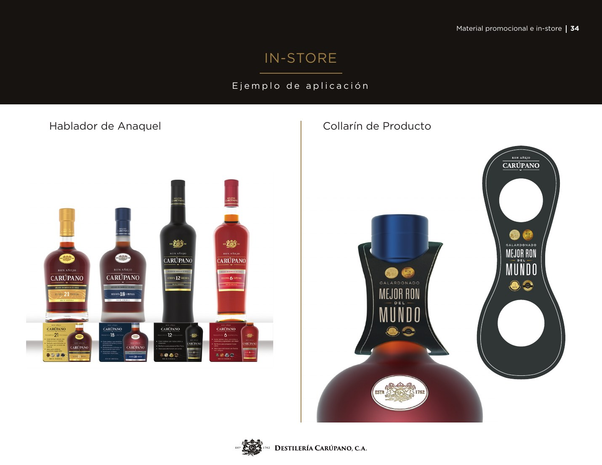
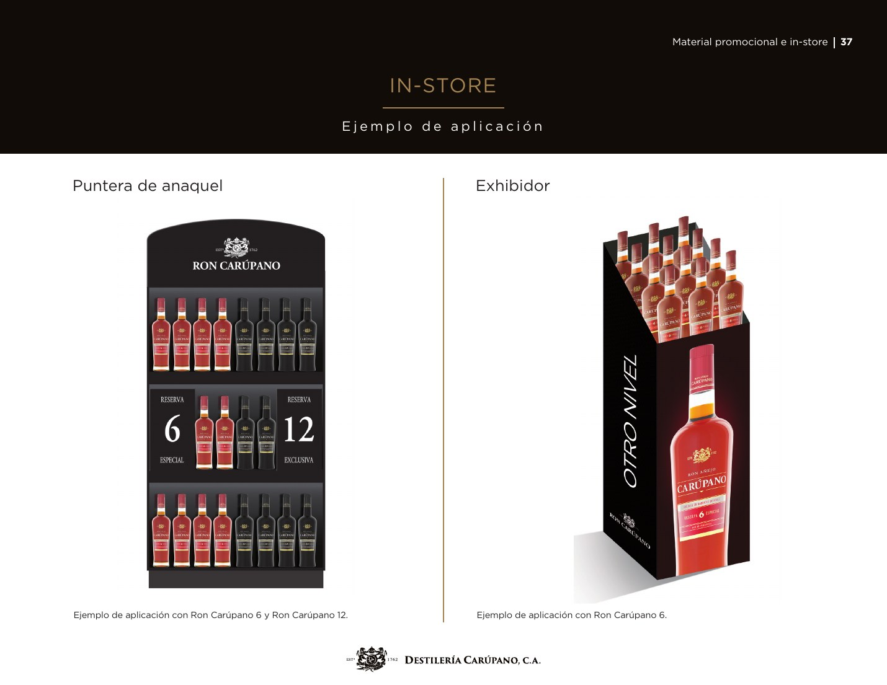
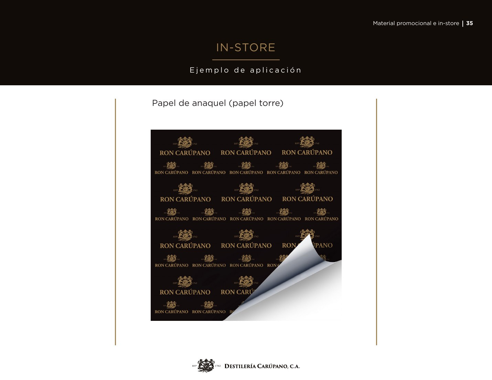
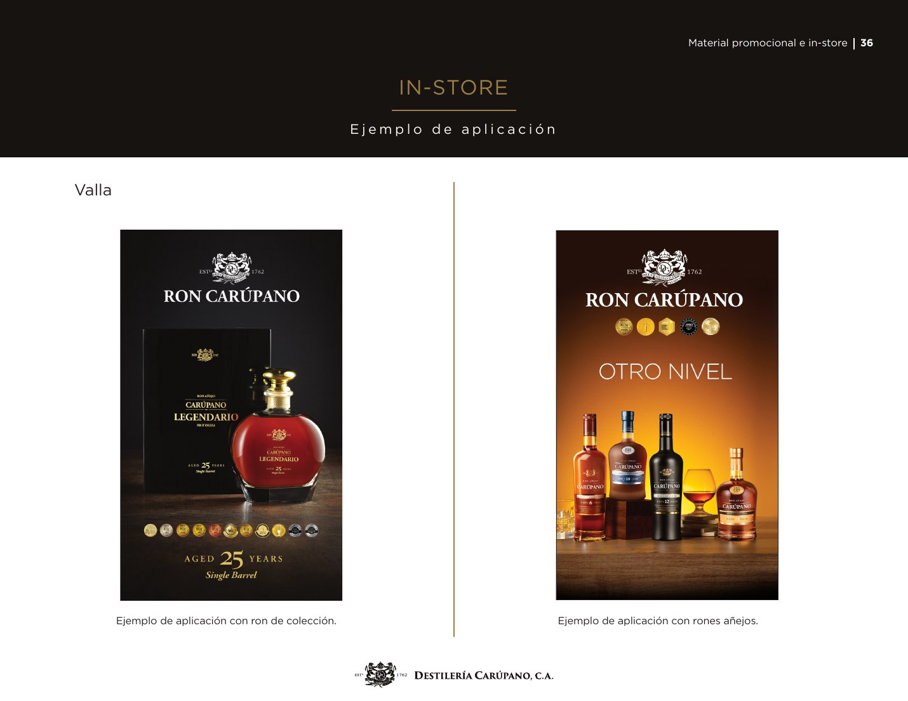
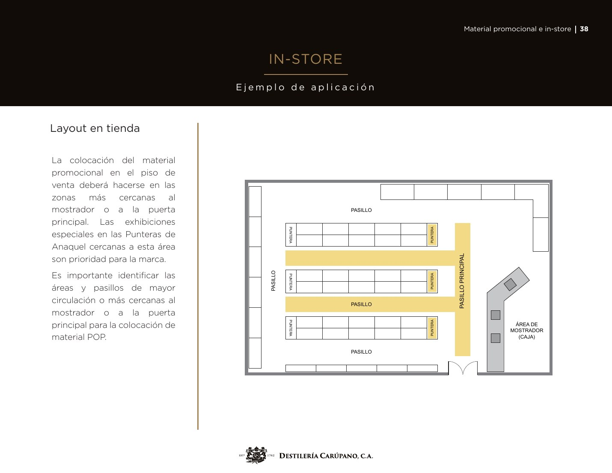
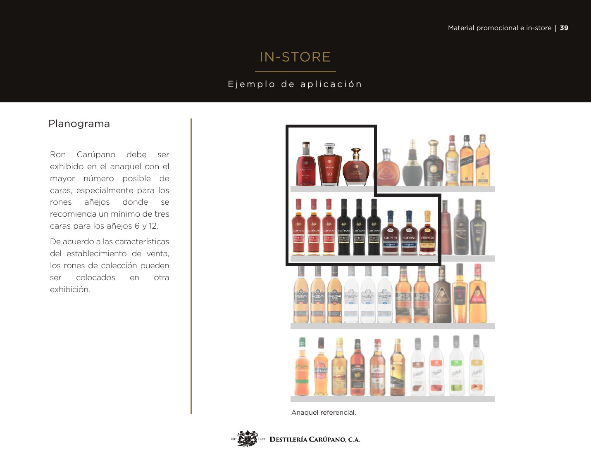

PÁGINA 34
Hablador + collarín
Información próxima al producto para destacar una razón concreta de elección.
Una guía práctica para ganar visibilidad, organizar el portafolio y ejecutar materiales premium con consistencia.

El manual organiza la presencia de marca desde la botella hasta la exhibición completa. Cada elemento debe favorecer lectura, calidad de ejecución y proximidad al flujo de compra.

Información próxima al producto para destacar una razón concreta de elección.

Bloque visual continuo que aumenta presencia y delimita el territorio de la marca.

Una pieza para colección y otra para añejos, con mensaje y producto protagonistas.
La puntera combina Carúpano 6 y 12; el exhibidor concentra Carúpano 6.

Prioridad para zonas cercanas al mostrador, puerta principal y pasillos de mayor circulación.

Máximo número posible de caras y un mínimo de tres para los añejos 6 y 12.
Ron Carúpano debe ocupar el mayor número posible de caras. El manual recomienda un mínimo de tres para Carúpano 6 y Carúpano 12.
Los objetos deben guardar relación con el segmento, el consumo y la personalidad de la marca. El manual contempla prendas, bolsos, vasos, posavasos, removedores, coolers, cocteleras, collarines y materiales de anaquel.
Piezas directamente conectadas con preparación, servicio y ritual.
Mensajes simples próximos a la botella y con lectura inmediata.
Acabados premium, aplicación proporcionada y utilidad real.